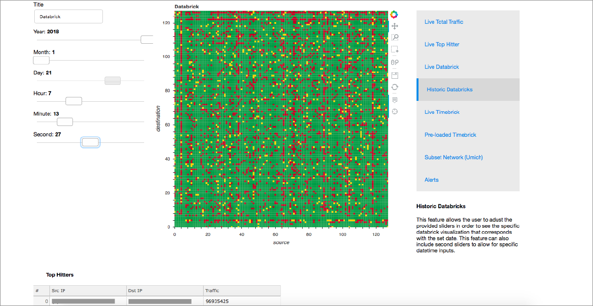
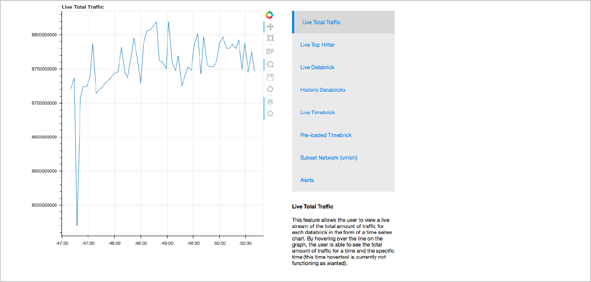
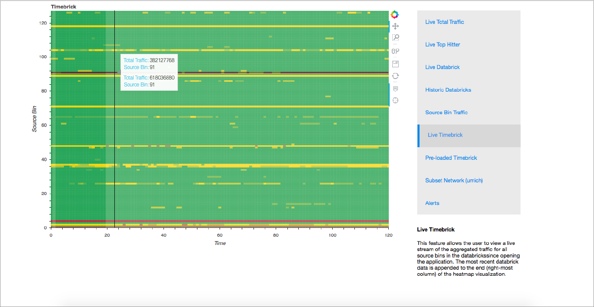
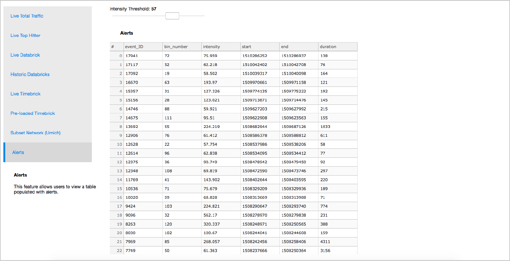
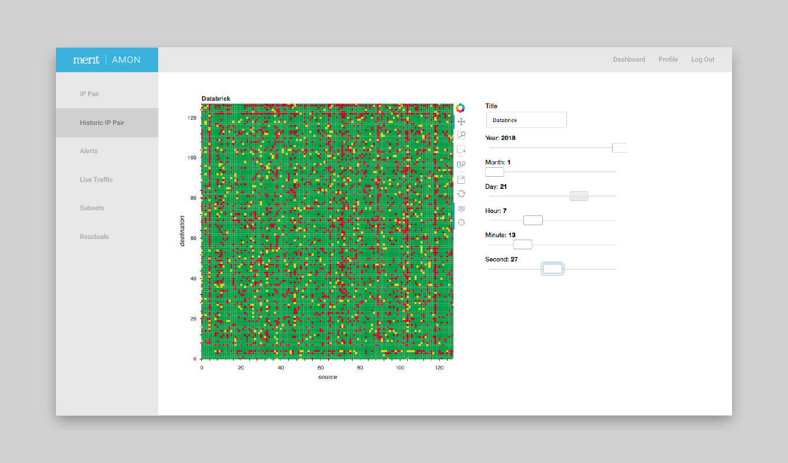

Project Type: Front-end Software Engineering
Date: May 2017 - April 2018
Role: Front-end Software Engineer and UX Designer
Work Setting: Team of 6
Tools: Python, Pandas, Bokeh, HTML, CSS, JavaScript
In May of 2017, I started my internship with Merit Network, a nonprofit organization providing high-performance computer networking and related services to educational, government, health care, and nonprofit organizations in Michigan. Our first meeting discussed querying MongoDB databases to display source and destination IP addresses using information provided through a Boyer-Moore algorithm.The only command line commands I knew were cd and ls to either change the current directory or list the contents of the current directory. I was stumped when my supervisor asked me to use the ssh command on the first day. I was confused and overwhelmed, trying to figure out how this played into the user experience designer role I thought I had signed up for.
After a week full of questions, reading, and learning I had a better understanding of what I was actually doing. From front-end software development and data visualization to user experience and graphic design, I realized that I would be wearing many hats during this internship.
For the first three months of my internship, I settled into a role as a front-end software engineer where I would be prototyping 10 features for the network monitoring project I would be working on, titled AMON (All-packet MONitor). This entailed creating data visualizations regarding network traffic and anomalies in this traffic (potential cyber attacks). I would create small web applications using the Python programming language, the Pandas data manipulation module for Python, the Bokeh data visualization module for Python, and a bit of general HTML, CSS, and JavaScript. These applications were working prototypes of features that will eventually be built into the official dashboard for AMON.
  In the fall of 2017, my internship was extended with funding from a grant received by the statistics department of the University of Michigan. This portion of my internship was an basically just a continuation of my summer internship with a bit more of a focus on the anomaly detection side of the project.
Some of the backend engineers and statisticians that I was working with on the project over the summer had created software that would detect any anomalies in network traffic and deposit data on the event into a specified database. A related “forensics” database would give more information on the event.
My work for the fall internship was focused around using these anomaly detection databases to prototype a few new features that displayed this data in a more user-friendly manner.
Fortunately, the statistics grant was extended for the winter of 2018 as well. This portion of my internship is focused around two primary areas:
1) Completing a few more feature prototypes dealing with subnets within the larger network provided by Merit. (i.e. the user could view incoming network traffic specifically to the University of Michigan)
2) Utilizing all of the prototypes I’ve created to develop an onboarding application for organizations that would like to test and learn the AMON software before actually purchasing the full software package.
Concept of onboarding dashboard (development still in progress)